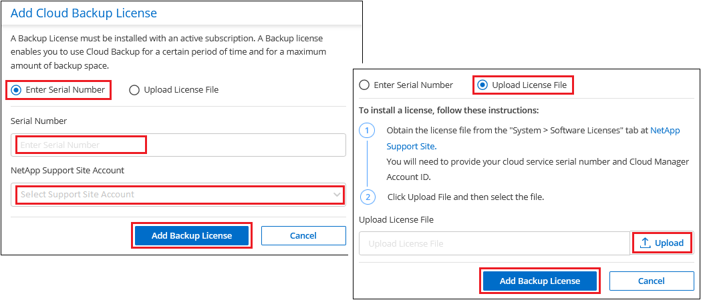

Request doc changes
Request doc changes Edit this page
Edit this page Learn how to contribute
Learn how to contributeSet up licensing for Cloud Backup
Contributors
A 30-day free trial of Cloud Backup starts when you enable the Cloud Backup service thought your cloud provider marketplace. When the free trial ends, you’ll pay for Cloud Backup using the pay-as-you-go (PAYGO) marketplace subscription, or by purchasing a bring-your-own license (BYOL) from NetApp.
A few notes before you read any further:
-
If you’ve already subscribed to the Cloud Manager pay-as-you-go (PAYGO) subscription in your cloud provider’s marketplace for a Cloud Volumes ONTAP system, then you’re automatically subscribed to Cloud Backup as well. You won’t need to subscribe again.
-
The Cloud Backup bring-your-own-license (BYOL) is a floating license that you can use across all systems associated with your Cloud Manager account. So if you have sufficient backup capacity from an existing license, you may not need to purchase another BYOL license.
-
When backing up on-prem ONTAP data to StorageGRID, you need a BYOL license, but there’s no cost for cloud provider storage space.
Use a Cloud Backup PAYGO subscription
For pay-as-you-go you’ll pay your cloud provider for object storage costs and for NetApp backup licensing costs on an hourly basis in a single subscription. Use these links to subscribe to Cloud Backup from your cloud provider marketplace:
Subscribe to yearly contracts through AWS
There are two annual contracts available from the AWS Marketplace page for Cloud Volumes ONTAP and on-premises ONTAP systems. They are available in 1-, 2-, or 3-year terms:
-
A "Cloud Backup" plan that enables you to back up Cloud Volumes ONTAP data and on-premises ONTAP data.
If you want to use this option, set up your subscription from the Marketplace page and then associate the subscription with your AWS credentials. Note that you’ll also need to pay for your Cloud Volumes ONTAP systems using this annual contract subscription since you can assign only one active subscription to your AWS credentials in Cloud Manager.
-
A "CVO Professional" plan that enables you to bundle Cloud Volumes ONTAP and Cloud Backup. This includes unlimited backups for Cloud Volumes ONTAP volumes charged against this license (backup capacity is not counted against the license). This option doesn’t enable you to back up on-premises ONTAP data.
See the Cloud Volumes ONTAP licensing topic to learn more about this licensing option.
If you want to use this option, you can set up the annual contract when you create a Cloud Volumes ONTAP working environment and Cloud Manager prompts you to subscribe to the AWS Marketplace.
Use a Cloud Backup BYOL license
Bring-your-own licenses from NetApp provide 1-, 2-, or 3-year terms. You pay only for the data that you protect, calculated by the logical used capacity (before any efficiencies) of the source ONTAP volumes which are being backed up. This capacity is also known as Front-End Terabytes (FETB).
The BYOL Cloud Backup license is a floating license where the total capacity is shared across all systems associated with your Cloud Manager account. For ONTAP systems you can get a rough estimate of the capacity you’ll need by running the CLI command volume show-space -logical-used for the volumes you plan to back up.
If you don’t have a Cloud Backup BYOL license, click the chat icon in the lower-right of Cloud Manager to purchase one.
Optionally, if you have an unassigned node-based license for Cloud Volumes ONTAP that you won’t be using, you can convert it to a Cloud Backup license with the same dollar-equivalence and the same expiration date. Go here for details.
You use the Digital Wallet page in Cloud Manager to manage BYOL licenses for Cloud Backup. You can add new licenses and update existing licenses.
Obtain your Cloud Backup license file
After you’ve purchased your Cloud Backup license, you activate the license in Cloud Manager by entering the Cloud Backup serial number and NSS account, or by uploading the NLF license file. The steps below show how to get the NLF license file if you plan to use that method.
-
Sign in to the NetApp Support Site and click Systems > Software Licenses.
-
Enter your Cloud Backup license serial number.

-
In the License Key column, click Get NetApp License File.
-
Enter your Cloud Manager Account ID (this is called a Tenant ID on the support site) and click Submit to download the license file.

You can find your Cloud Manager Account ID by selecting the Account drop-down from the top of Cloud Manager, and then clicking Manage Account next to your account. Your Account ID is in the Overview tab.
Add Cloud Backup BYOL licenses to your account
After you purchase a Cloud Backup license for your NetApp account, you need to add the license to Cloud Manager.
-
Click All Services > Digital Wallet > Data Services Licenses.
-
Click Add License.
-
In the Add License dialog, enter the license information and click Add License:
-
If you have the backup license serial number and know your NSS account, select the Enter Serial Number option and enter that information.
If your NetApp Support Site account isn’t available from the drop-down list, add the NSS account to Cloud Manager.
-
If you have the backup license file, select the Upload License File option and follow the prompts to attach the file.

-
Cloud Manager adds the license so that Cloud Backup is active.
Update a Cloud Backup BYOL license
If your licensed term is nearing the expiration date, or if your licensed capacity is reaching the limit, you’ll be notified in the Backup UI. This status also appears in the Digital Wallet page and in Notifications.
You can update your Cloud Backup license before it expires so that there is no interruption in your ability to back up and restore your data.
-
Click the chat icon in the lower-right of Cloud Manager, or contact Support, to request an extension to your term or additional capacity to your Cloud Backup license for the particular serial number.
After you pay for the license and it is registered with the NetApp Support Site, Cloud Manager automatically updates the license in the Digital Wallet and the Data Services Licenses page will reflect the change in 5 to 10 minutes.
-
If Cloud Manager can’t automatically update the license, then you’ll need to manually upload the license file.
-
You can obtain the license file from the NetApp Support Site.
-
On the Digital Wallet page Data Services Licenses tab, click
 for the service serial number you are updating, and click Update License.
for the service serial number you are updating, and click Update License. -
In the Update License page, upload the license file and click Update License.
-
Cloud Manager updates the license so that Cloud Backup continues to be active.
BYOL license considerations
When using a Cloud Backup BYOL license, Cloud Manager displays a warning in the user interface when the size of all the data you are backing up is nearing the capacity limit or nearing the license expiration date. You receive these warnings:
-
When backups have reached 80% of licensed capacity, and again when you have reached the limit
-
30 days before a license is due to expire, and again when the license expires
Use the chat icon in the lower right of the Cloud Manager interface to renew your license when you see these warnings.
Two things can happen when your license expires:
-
If the account you are using has a marketplace account, the backup service continues to run, but you are shifted over to a PAYGO licensing model. You are charged for the capacity that your backups are using.
-
If the account you are does not have a marketplace account, the backup service continues to run, but you will continue to see the warnings.
Once you renew your BYOL subscription, Cloud Manager automatically updates the license. If Cloud Manager can’t access the license file over the secure internet connection, you can obtain the file yourself and manually upload it to Cloud Manager. For instructions, see how to update a Cloud Backup license.
Systems that were shifted over to a PAYGO license are returned to the BYOL license automatically. And systems that were running without a license will stop seeing the warnings and will be charged for backup activity that occurred while the license was expired.